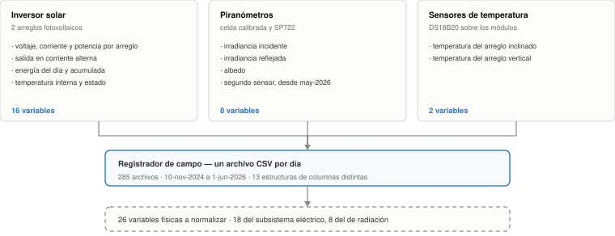
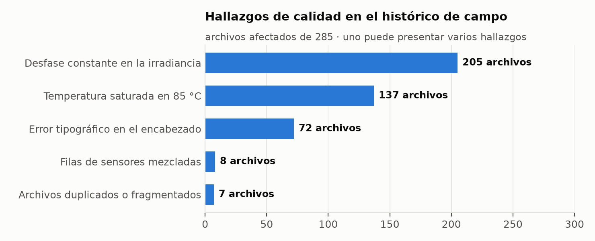

Proyecto AGRIVOLTAIC · Región Huetar Norte
Primera semana de trabajo, dedicada a entender qué hay antes de construir nada. Se revisaron los objetivos de los dos proyectos asociados para delimitar qué le corresponde aportar a esta pasantía; se levantó el inventario completo de fuentes de datos y variables del sistema agrovoltaico; se diagnosticó la calidad real del histórico de monitoreo archivo por archivo; y se definieron los usuarios y casos de uso que debe atender la plataforma.
El resultado principal de la semana es un diagnóstico documentado: el histórico de monitoreo no es utilizable tal como está y los problemas encontrados no son homogéneos ni triviales. Ese diagnóstico derivó en 16 consultas formales al equipo del proyecto, porque cada una implica decidir qué se hace con mediciones físicas reales y esa decisión no le corresponde a quien procesa los datos.
La pasantía contribuye a dos proyectos de investigación con necesidades distintas, y la primera tarea fue delimitar qué parte de cada uno se asume, para no dispersar el esfuerzo:
| Proyecto | Aporte comprometido |
|---|---|
| AGRIVOLTAIC competitividad de la región Huetar Norte |
Implementar la plataforma en la nube que sostenga la recolección, el almacenamiento, la visualización y la predicción de datos del sistema agrovoltaico de San Carlos. |
| Arquitectura multiagente mapeo y monitorización con IA |
Construir el flujo mínimo funcional de extremo a extremo con agentes virtuales, trazabilidad y componentes básicos de operación continua de modelos. |
Ambos aportes convergen en un punto: sin datos confiables no hay ni visualización, ni predicción, ni agente que valga. Por eso la primera semana se dedicó íntegramente a la fuente de datos y no al desarrollo.
El sistema agrovoltaico de San Carlos instrumenta tres fuentes físicas independientes, cuyas lecturas terminan mezcladas en un único archivo diario. Identificar qué mide cada una, con qué unidad y a qué elemento físico corresponde es lo que permite después separarlas correctamente.

Un hallazgo relevante del inventario: la correspondencia entre los nombres que usa el registrador (PV1, PV2) y los dos arreglos físicos del sistema —uno inclinado y otro vertical— no está documentada en ninguna parte de los archivos. Sin esa correspondencia, cualquier comparación de rendimiento entre montajes es inválida, así que se incorporó como consulta al equipo.
| Subsistema | Variables | Contenido |
|---|---|---|
| Eléctrico | 18 | Voltaje, corriente y potencia de cada arreglo; potencia, voltaje, corriente y frecuencia de salida en corriente alterna; energía del día y acumulada, global y por arreglo; temperatura interna del equipo; código de estado; temperatura de cada uno de los dos arreglos. |
| Radiación | 8 | Irradiancia incidente y reflejada, y albedo, tanto de la celda de referencia como del segundo piranómetro incorporado posteriormente. |
| Total | 26 |
Se revisaron los 285 archivos de campo disponibles, que cubren del 10 de noviembre de 2024 al 1 de junio de 2026. El diagnóstico confirma que el histórico no es utilizable sin un trabajo previo de estandarización, y cuantifica cada problema en lugar de describirlo en general.

| Hallazgo | Descripción y evidencia |
|---|---|
| Estructuras de columnas múltiples | Trece estructuras distintas conviven en el histórico. La misma magnitud física aparece con nombre corto, con nombre largo y unidad, o en minúsculas con guiones bajos. Además hay columnas que aparecen y desaparecen entre épocas. |
| Errores tipográficos en los encabezados | Acento incorrecto en «Energía» en 72 archivos, mayúsculas erróneas en 2 y falta de espacio antes de la unidad en 5. Señal de que la configuración del registrador fue editada por distintas personas. |
| Desfase constante en la irradiancia | Un valor negativo constante de −38,845 aparece en 205 archivos, y se registran mínimos de hasta −15.538. La señal no está en unidades físicas. |
| Temperatura saturada | Valor fijo de 85,0 °C en 137 archivos. Corresponde al código de error del sensor utilizado cuando pierde comunicación, no a una temperatura real. |
| Filas de sensores mezcladas | En 8 archivos se intercalan filas del inversor y filas de solo radiación con distinto número de columnas. Leídas sin separar, los valores de irradiancia caen en la columna de voltaje y corrompen el dato. |
| Muestreo variable | El intervalo de registro cambia a lo largo del proyecto, de pocos segundos a cinco minutos, sin que el archivo lo declare. |
| Duplicados y fragmentos | Dos archivos son copias exactas de otro y cinco son fragmentos de una o dos filas, producto de descargas incompletas. |
Aparte de la calidad del dato, la serie tiene interrupciones de captura que condicionan cualquier análisis posterior y que conviene tener presentes desde ya:
| Periodo sin datos | Días | Implicación |
|---|---|---|
| 29-dic-2024 a 4-may-2025 | 126 | Falta la estación seca completa del primer año |
| 26-jun-2025 a 5-sep-2025 | 71 | Falta buena parte de la estación lluviosa |
| 21-nov-2024 a 23-dic-2024 | 32 | Interrupción temprana del arranque |
| 5-sep-2025 a 22-sep-2025 | 17 | Interrupción menor |
Se descarta rellenar estas brechas con datos generados artificialmente: introduciría en la base valores que ningún sensor midió. La alternativa planteada es apoyarse en datos satelitales públicos como serie de referencia paralela, sin mezclarlos con la medición real.
La plataforma no se diseña en abstracto. Se identificaron tres perfiles de usuario y los casos de uso que cada uno necesita, lo que fija qué tiene que poder responder el sistema:
| Usuario | Qué necesita resolver |
|---|---|
| Equipo investigador | Consultar el comportamiento del sistema en un periodo dado, comparar el rendimiento de los dos montajes de paneles y relacionar la producción eléctrica con las condiciones ambientales. |
| Equipo de campo | Enterarse de que un sensor dejó de reportar o de que una medición se salió de su comportamiento esperado, sin tener que revisar los archivos manualmente. |
| Coordinación del proyecto | Obtener una lectura resumida del estado del sistema y de la disponibilidad de datos, en lenguaje comprensible y sin manipular la base. |
De ahí se derivan cuatro casos de uso preliminares para el prototipo:
El diagnóstico deja doce decisiones de tratamiento que no se pueden tomar unilateralmente, porque implican descartar o alterar mediciones físicas reales, más cuatro datos técnicos del sistema que no constan en ningún archivo. Se consolidaron en una consulta formal al equipo del proyecto:
| Grupo | Qué se consulta |
|---|---|
| Nomenclatura | Validación de los nombres propuestos para las variables y de la interpretación de las distintas medidas de energía. |
| Temperatura saturada | Causa del error y qué hacer con esos registros: descartarlos o conservarlos marcados. |
| Irradiancia | Origen del desfase constante, si debe corregirse en la carga o en el análisis, y si existe una constante de calibración registrada. |
| Filas mezcladas | Si esos registros deben recuperarse o descartarse, y con qué criterio. |
| Muestreo | Cuál es el ritmo de registro definido por la metodología para cada tipo de variable. |
| Límites de validez | Rangos físicos aceptables para temperatura, potencia, voltaje, corriente y frecuencia. |
| Datos del sistema | Potencia instalada por arreglo, inclinación y orientación de cada montaje, correspondencia de cada arreglo con su identificador en los archivos, y constante de calibración del sensor de referencia. |
Detalle de las 20 horas de la semana, con el resultado asociado a cada bloque de trabajo.
| Actividad | Resultado | Horas |
|---|---|---|
| Revisión de los objetivos de ambos proyectos y delimitación del aporte | Alcance acotado y criterio de prioridad para las semanas siguientes | 2,5 |
| Inventario de fuentes físicas y variables del sistema | 3 fuentes documentadas y 26 variables identificadas con su unidad y su elemento físico | 4,5 |
| Diagnóstico de calidad del histórico de campo | 285 archivos revisados; 7 hallazgos cuantificados y 4 interrupciones de la serie documentadas | 6,0 |
| Definición de usuarios y casos de uso preliminares | 3 perfiles de usuario y 4 casos de uso que orientan el diseño del prototipo | 3,0 |
| Preparación y seguimiento de la consulta al equipo | 16 puntos consolidados en un documento de consulta, con evidencia y opciones para cada uno | 4,0 |
| Total Semana 1 | 20,0 |